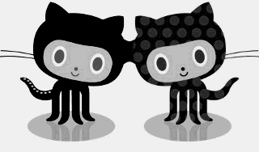

Every parts of a computer are magic for me.
I'm Dave I was born in '91 and I'm living in Hungary. I'm a wannabe software developer.
I always say a good developer isn't a person who knows "everything", but a person who knows few things but can use Google and read references. I'm trying to be that kind of person.
Contact me at: david [.] vas1 [@] gmail [.] com
Usually I'm available on services with the following nicknames: Anubisss, anuka, anukasd.
Mostly I'm interested in C++ programming especially server-side Linux programming, I'm a fan of Linux as a sysadmin too. I also like C#. One of my very first language was PHP I learnt a lot of things thanks to its.
Python is a very interesting and awesome programming language in my humble opinion. It has a pretty good community and a lot of extensions which are avaiable via PyPI (Python Package Index). Moreover with Django it rocks the web. :)
Sometimes I read about reverse engineering which is a pretty interesting topic for me. I always wonder how a low level language like C or a bit higher level language like C++ could work if assembly (or machine code) is under them. I like to dig into binaries with IDA Pro.
Finally, I like open source projects and the philosophy itself. To my mind free and open source libraries are the most important tools, resources for a developper who wouldn't like to reinvent the wheel.